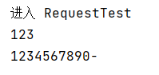

Servlet¶
简介¶
Servlet（Server Applet）是Java Servlet的简称，称为小服务程序或服务连接器，用Java编写的服务器端程序，具有独立于平台和协议的特性，主要功能在于交互式地浏览和生成数据，生成动态Web内容。
广义的Servlet是指任何实现了Servlet接口的类
Servlet运行于支持Java的应用服务器中。从原理上讲，Servlet可以响应任何类型的请求，但绝大多数情况下Servlet只用来扩展基于HTTP协议的Web服务器。
【总结】实现了servlet接口的java程序，就是servlet
HelloServlet¶
Servlet接口Sun公司有两个默认的实现类：HttpServlet，GenericServlet
- maven模板，webapp，修改web.xml（这部分看自己tomcat服务器web.xml是啥，然后复制个头文件过来就行）
<?xml version="1.0" encoding="UTF-8" ?>
<web-app xmlns="http://xmlns.jcp.org/xml/ns/javaee"
xmlns:xsi="http://www.w3.org/2001/XMLSchema-instance"
xsi:schemaLocation="http://xmlns.jcp.org/xml/ns/javaee
http://xmlns.jcp.org/xml/ns/javaee/web-app_4_0.xsd"
version="4.0"
metadata-complete="true">
</web-app>
- 将项目的结构补充完整，java和resources

-
编写一个Servlet程序
-
编写一个普通的类
-
实现Servlet接口，这里我们直接继承HttpServlet
public class HelloServlet extends HttpServlet { // 由于get或者post只是实现方式不同，可以互相调用，业务逻辑都一样 @Override protected void doGet(HttpServletRequest req, HttpServletResponse resp) throws ServletException, IOException { PrintWriter writer = resp.getWriter(); writer.print("Hello Servlet!"); } @Override protected void doPost(HttpServletRequest req, HttpServletResponse resp) throws ServletException, IOException { doGet(req, resp); } } -
编写Servlet的映射
-
为什么需要映射？
- 因为我们写的是java程序，但是要通过浏览器访问，浏览器访问需要连接服务器，所以我们需要在web服务中注册我们写的Servlet，还需要给个URL路径
<!--注册servlet--> <servlet> <servlet-name>hello</servlet-name> <servlet-class>com.tcmyxc.servlet.HelloServlet</servlet-class> </servlet> <!--servlet请求路径--> <servlet-mapping> <servlet-name>hello<</servlet-name> <url-pattern>/hello</url-pattern> </servlet-mapping> -
配置Tomcat
-
注意配置项目发布的路径
- 启动测试
从 Servlet3 开始，也可以使用注解开发
1、修改 web.xml 根标签的属性 metadata-complete 为 false
<web-app xmlns="http://xmlns.jcp.org/xml/ns/javaee"
xmlns:xsi="http://www.w3.org/2001/XMLSchema-instance"
xsi:schemaLocation="http://xmlns.jcp.org/xml/ns/javaee
http://xmlns.jcp.org/xml/ns/javaee/web-app_4_0.xsd"
version="4.0"
metadata-complete="false">
2、使用注解开发，不需要在 web.xml 中配置这个 servlet
@WebServlet(name = "hello-servlet", value = "/hello")
public class HelloServlet extends HttpServlet {
@Override
protected void doGet(HttpServletRequest req, HttpServletResponse resp) throws ServletException, IOException {
PrintWriter writer = resp.getWriter();// 响应流
writer.write("Hello Servlet");
writer.close();
}
@Override
protected void doPost(HttpServletRequest req, HttpServletResponse resp) throws ServletException, IOException {
doGet(req, resp);
}
}
Servlet原理¶
Servlet由Web服务器调用
Mapping¶
-
一个 Servlet 可以指定一个路径
-
一个 Servlet 可以指定多个路径
-
一个 Servlet 可以指定通用路径
<servlet-mapping>
<servlet-name>hello-servlet</servlet-name>
<url-pattern>/hello/*</url-pattern>
</servlet-mapping>
- 可以自定义后缀，但是
*前面不能加任何东西
<servlet-mapping>
<servlet-name>hello-servlet</servlet-name>
<url-pattern>*.do</url-pattern>
</servlet-mapping>
ServletContext¶
每个 web 程序都有一个 ServletContext 对象，代表当前的 web 应用
1、共享数据¶
（方便不同 servlet 之间共享数据），一个设置属性的 k, v，另外一个根据属性的 k 获取 v
@WebServlet(name = "helloServlet", value = "/hello")
public class HelloServlet extends HttpServlet {
@Override
protected void doGet(HttpServletRequest req, HttpServletResponse resp)
throws ServletException, IOException {
ServletContext servletContext = this.getServletContext();
servletContext.setAttribute("name", "徐文祥");// 设置值
resp.getWriter().write("Hello");
}
@Override
protected void doPost(HttpServletRequest req, HttpServletResponse resp)
throws ServletException, IOException {
doGet(req, resp);
}
}
@WebServlet(name = "getHelloMsgServlet", value = "/getMsg")
public class GetHelloMsgServlet extends HttpServlet {
@Override
protected void doPost(HttpServletRequest req, HttpServletResponse resp)
throws ServletException, IOException {
doGet(req, resp);
}
@Override
protected void doGet(HttpServletRequest req, HttpServletResponse resp)
throws ServletException, IOException {
ServletContext servletContext = this.getServletContext();
String name = (String) servletContext.getAttribute("name");// 取值
resp.setContentType("text/html;charset=utf-8");
resp.getWriter().write("名字是" + name);
}
}
2、获取初始化参数¶
首先在 web.xml 中配置
<!-- 配置初始化的参数-->
<context-param>
<param-name>jdbcUrl</param-name>
<param-value>jdbc:mysql://localhost:3306/mybatis</param-value>
</context-param>
@WebServlet(name = "getInitparameterServlet", value = "/jdbcUrl")
public class GetInitparameterServlet extends HelloServlet{
@Override
protected void doPost(HttpServletRequest req, HttpServletResponse resp)
throws ServletException, IOException {
doGet(req, resp);
}
@Override
protected void doGet(HttpServletRequest req, HttpServletResponse resp)
throws ServletException, IOException {
ServletContext servletContext = this.getServletContext();
String jdbcUrl = servletContext.getInitParameter("jdbcUrl");
resp.setContentType("text/html;charset=utf-8");
resp.getWriter().write("jdbcUrl: " + jdbcUrl);
}
}
结果：
3、请求转发¶
转发不会改变路径
@WebServlet(name = "dispatcherServlet", value = "/dis")
public class DispatcherServlet extends HttpServlet {
@Override
protected void doGet(HttpServletRequest req, HttpServletResponse resp) throws ServletException, IOException {
ServletContext servletContext = this.getServletContext();
// 请求转发,将/dis 转发到 /hello
servletContext.getRequestDispatcher("/hello").forward(req, resp);
}
@Override
protected void doPost(HttpServletRequest req, HttpServletResponse resp) throws ServletException, IOException {
doGet(req, resp);
}
}
4、读取资源文件¶
Properties 需要一个输入流，那我们就构造出来一个

@WebServlet(name = "propertiesServlet", value = "/prop")
public class PropertiesServlet extends HttpServlet {
@Override
protected void doGet(HttpServletRequest req, HttpServletResponse resp) throws ServletException, IOException {
// 从资源文件中加载输入流
InputStream resourceAsStream = this.getServletContext().getResourceAsStream("/WEB-INF/classes/db.properties");
Properties properties = new Properties();
properties.load(resourceAsStream);
String username = properties.getProperty("username");
String password = properties.getProperty("password");
// 输出
resp.getWriter().write("username" + username + "; password" + password);
}
@Override
protected void doPost(HttpServletRequest req, HttpServletResponse resp) throws ServletException, IOException {
doGet(req, resp);
}
}
测试：

HttpServletResponse¶
服务器收到客户端的 http 请求，针对这个请求，会创建一个代表请求的 HttpServletRequest 和代表响应的 HttpServletResponse
先看一下本身的方法
再看看从父类继承的方法
分类¶
发送数据的方法¶
public ServletOutputStream getOutputStream() throws IOException;
public PrintWriter getWriter() throws IOException;
设置响应头的方法¶
public void setCharacterEncoding(String charset);
public void setHeader(String name, String value);
等等
状态码¶
public static final int SC_OK = 200;
public static final int SC_MULTIPLE_CHOICES = 300;
常见的应用¶
（1）向浏览器发送消息¶
（2）下载文件¶
- 获取下载文件的路径、文件名
- 让浏览器支持下载我们需要的东西
- 获取下载的输入流
- 创建缓冲区
- 获取输出流
- 将 FileOutputStream 流写入buffer 缓冲区
- 使用输出流将缓冲区的数据输出到客户端
@WebServlet(name = "fileServlet", value = "/getImg")
public class FileServlet extends HttpServlet {
@Override
protected void doGet(HttpServletRequest req, HttpServletResponse resp) throws ServletException, IOException {
// - 获取下载文件的路径、文件名
String realPath = this.getServletContext().getRealPath("/WEB-INF/classes/img/徐文祥.png");
System.out.println("realPath: " + realPath);
String filename = realPath.substring(realPath.lastIndexOf("\\") + 1);
System.out.println("filename: " + filename);
// - 让浏览器支持下载我们需要的东西，同时设置中文支持
resp.setHeader("Content-disposition","attachment;filename=" + URLEncoder.encode(filename, "UTF-8"));
// - 获取下载的输入流
FileInputStream fileInputStream = new FileInputStream(new File(realPath));
// - 创建缓冲区
int len = 0;
byte[] buffer = new byte[1024];
// - 获取输出流
ServletOutputStream outputStream = resp.getOutputStream();
// - 将 FileOutputStream 流写入buffer 缓冲区，使用输出流将缓冲区的数据输出到客户端
while((len = fileInputStream.read(buffer)) > 0 ){
outputStream.write(buffer, 0, len);
}
fileInputStream.close();
outputStream.close();
}
@Override
protected void doPost(HttpServletRequest req, HttpServletResponse resp) throws ServletException, IOException {
doGet(req, resp);
}
}
（3）验证码功能¶
- 前端实现
- 后端实现，需要用到 Java 的图片类，生成一个图片
@WebServlet(name = "imageServlet", value = "/getNum")
public class ImageServlet extends HttpServlet {
@Override
protected void doGet(HttpServletRequest req, HttpServletResponse resp) throws ServletException, IOException {
// 如何让浏览器 5 秒刷新一次
resp.setHeader("refresh", "5");
// 在内存中创建一个图片
BufferedImage image = new BufferedImage(80, 20, BufferedImage.TYPE_INT_RGB);
// 得到图片
Graphics2D graphics = (Graphics2D) image.getGraphics();// 笔
// 设置笔的颜色
graphics.setColor(Color.white);
graphics.fillRect(0, 0, 80, 20);
// 给图片写数据
graphics.setColor(Color.red);
graphics.drawString(makeNumber(), 0, 20);
// 告诉浏览器，这个请求用图片方式打开
resp.setContentType("image/png");
// 网站是有缓存的，不让浏览器缓存
resp.setDateHeader("expires", -1);
resp.setHeader("Cache-Control", "no-cache");
resp.setHeader("Pragma", "no-cache");
// 写给浏览器
ImageIO.write(image, "png", resp.getOutputStream());
}
@Override
protected void doPost(HttpServletRequest req, HttpServletResponse resp) throws ServletException, IOException {
doGet(req, resp);
}
// 生成随机数
private String makeNumber(){
Random random = new Random();
String num = random.nextInt(9999) + "";
StringBuffer sb = new StringBuffer();
for(int i=0; i<4-num.length(); i++){
sb.append("0");
}
return sb.toString() + num;
}
}
（4）重定向（掌握）¶
例子1¶
@WebServlet(name = "redirectServlet", value = "/redirect")
public class RedirectServlet extends HttpServlet {
@Override
protected void doGet(HttpServletRequest req, HttpServletResponse resp) throws ServletException, IOException {
resp.sendRedirect("/r/getNum");// 需要加上项目的路径
}
@Override
protected void doPost(HttpServletRequest req, HttpServletResponse resp) throws ServletException, IOException {
doGet(req, resp);
}
}
重定向和换发的区别：
- 转发的时候 URL 不会发生变化
- 重定向 URL 会发生变化
例子2¶
@WebServlet(name = "requestTest", value = "/login")
public class RequestTest extends HttpServlet {
@Override
protected void doGet(HttpServletRequest req, HttpServletResponse resp) throws ServletException, IOException {
System.out.println("进入 RequestTest");
System.out.println(req.getParameter("username"));
System.out.println(req.getParameter("password"));
resp.sendRedirect("/r/success.jsp");
}
@Override
protected void doPut(HttpServletRequest req, HttpServletResponse resp) throws ServletException, IOException {
doGet(req, resp);
}
}
前端页面
登录页面
<%@ page contentType="text/html; charset=UTF-8" pageEncoding="UTF-8" %>
<!DOCTYPE html>
<html>
<head>
<title>JSP - Hello World</title>
</head>
<body>
<h1><%= "Hello World!" %>
</h1>
<%-- 这里提交的路径需要找到项目的路径--%>
<%-- ${pageContext.request.contextPath} 代表当前项目--%>
<form action="${pageContext.request.contextPath}/login" method="get">
用户名：<input type="text" name="username"><br>
密码：<input type="password" name="password"><br>
<input type="submit">
</form>
</body>
</html>
登录后页面：
<%@ page contentType="text/html; charset=UTF-8" pageEncoding="UTF-8" %>
<!DOCTYPE html>
<html>
<head>
<title>JSP - Hello World</title>
</head>
<body>
<h1><%= "Hello World!" %>
</h1>
<h1>Success 页面</h1>
</body>
</html>
测试：
（1）
（2）

（3）

HttpServletRequest¶
前端的 http 请求会被封装到 HttpServletRequest 中，我们通过 HttpServletRequest 的各种方法可以得到客户端发来的各种信息
获取前端发送的参数、请求转发¶
Servlet
@WebServlet(name = "requestServletDemo", value = "/login")
public class RequestServletDemo extends HttpServlet {
@Override
protected void doGet(HttpServletRequest req, HttpServletResponse resp) throws ServletException, IOException {
doPost(req, resp);
}
@Override
protected void doPost(HttpServletRequest req, HttpServletResponse resp) throws ServletException, IOException {
// 获取参数的名字
Enumeration<String> e = req.getParameterNames();
while (e.hasMoreElements()) {
System.out.println(e.nextElement());
}
System.out.println(req.getParameter("username"));
System.out.println(req.getParameter("password"));
// 通过请求转发
// 这里的 / 代表当前项目
req.getRequestDispatcher("/success.jsp").forward(req, resp);
}
}
前端页面跟上面的一样
测试结果：
username
password
123
1234567890
转发（URL没变）
Session和Cookie¶
session：客户端和服务器的一次交互就是会话
cookie：服务器发给客户端的令牌，客户端每次访问需要带着这个令牌访问，不然我不承认
Cookie 示例¶
1、从请求中拿 Cookie
WebServlet(name = "cookieDemo", value = "/getCookie")
public class CookieDemo extends HttpServlet {
@Override
protected void doGet(HttpServletRequest req, HttpServletResponse resp) throws ServletException, IOException {
// 防止中文乱码
req.setCharacterEncoding("utf-8");
resp.setCharacterEncoding("utf-8");
resp.setContentType("text/html;charset=utf-8");
PrintWriter out = resp.getWriter();
// 从客户端获取cookie
Cookie[] cookies = req.getCookies();
// 判断 cookie 是否为空
if(cookies != null){
// 如果存在，就遍历一下
for(Cookie cookie : cookies){
if (cookie.getName().equals("lastLoginName")) {
long lastLoginName = Long.parseLong(cookie.getValue());
Date date = new Date(lastLoginName);
out.write("上次访问的时间是" + date.toLocaleString());
}
}
}
else{
out.write("这是您近期第一次访问本站");
}
// 给客户端响应一个 cookie
Cookie cookie = new Cookie("name", "徐文祥");
Cookie cookie2 = new Cookie("lastLoginName", System.currentTimeMillis() + "");
resp.addCookie(cookie);
resp.addCookie(cookie2);
}
@Override
protected void doPost(HttpServletRequest req, HttpServletResponse resp) throws ServletException, IOException {
doGet(req, resp);
}
}
运行结果

浏览器 Cookie 查看
- 一个 Cookie 只能保存一个信息
- 可以有多个 Cookie 发给服务器
- 一个站点最多放 20 个，浏览器上限300个
- Cookie 大小有限制，最多4kb
如何删除 Cookie？
- 不设置有效期（即过期时间为0），关闭就没了
Session（重点）¶
- 服务器会给每一个用户（浏览器）创建一个 Session 对象
- 一个 Session 独占一个浏览器，只要浏览器没关、Sesion 就存在
- 用户登录之后，整个网站都能访问
Session 和 Cookie 的区别
代码示例
@WebServlet(name = "sessionDemo01", value = "/sd01")
public class SessionDemo01 extends HttpServlet {
@Override
protected void doGet(HttpServletRequest req, HttpServletResponse resp) throws ServletException, IOException {
// 防止中文乱码
req.setCharacterEncoding("utf-8");
resp.setCharacterEncoding("utf-8");
resp.setContentType("text/html;charset=utf-8");
PrintWriter out = resp.getWriter();
out.write("Hello sessionDemo01<br/>");
// 获取 session
HttpSession session = req.getSession();
session.setAttribute("name", "徐文祥");
System.out.println(session.getId());
System.out.println(session.isNew());
if(session.isNew()){
out.write("Sesssion 创建成功" + session.getId());
}
else{
out.write("Session 未过期" + session.getId());
}
}
@Override
protected void doPost(HttpServletRequest req, HttpServletResponse resp) throws ServletException, IOException {
doGet(req, resp);
}
}

从这里我们可以看出，Cookie 里面放了 Session 的 ID，然后每次访问，带着这个 ID 访问，服务器就能识别出这个是哪个 Session
注销 Session ，手动注销，然后使生效即可（调用 invalidate 方法）
Session 过期时间在 web.xml 文件配置
JSP¶
定义¶
JSP（全称JavaServer Pages）是由Sun Microsystems公司主导创建的一种动态网页技术标准。JSP部署于网络服务器上，可以响应客户端发送的请求，并根据请求内容动态地生成HTML、XML或其他格式文档的Web网页，然后返回给请求者。JSP技术以Java语言作为脚本语言，为用户的HTTP请求提供服务，并能与服务器上的其它Java程序共同处理复杂的业务需求。
JSP 原理¶
JSP 本质上就是一个 Servlet